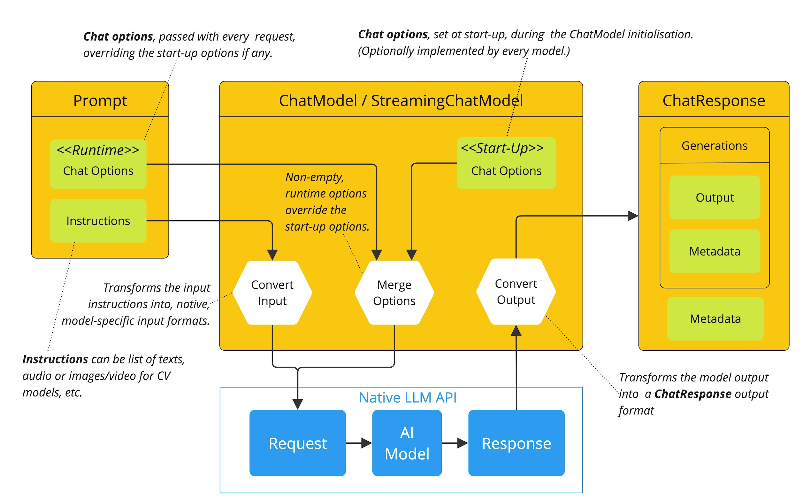
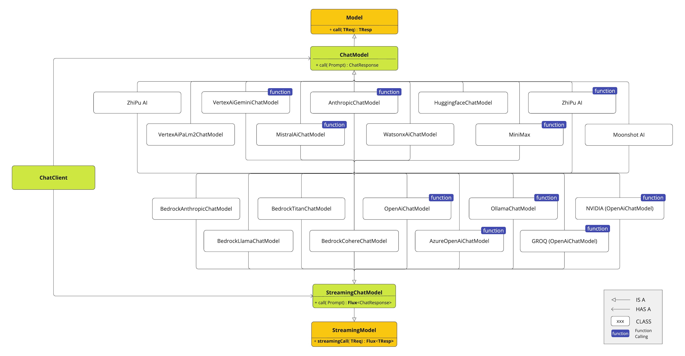
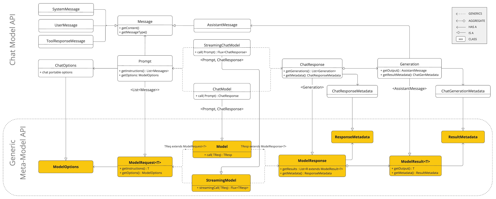

聊天模型 API #
聊天模型 API 使开发者能够将 AI 驱动的聊天补全功能集成到他们的应用程序中。它利用预训练的语言模型（例如 GPT，生成式预训练 Transformer），对用户的自然语言输入生成类似人类的响应。
该 API 通常通过向 AI 模型发送提示或部分对话来工作，然后模型会根据其训练数据和对自然语言模式的理解，生成完整或延续的对话。完整的响应随后返回给应用程序，应用程序可以将其呈现给用户或用于进一步处理。
Spring AI Chat Model API 旨在提供一个简单易用的接口，用于与各种 [
AI 模型](../concepts.html#_models)进行交互，使开发人员能够以最少的代码更改在不同模型之间切换。此设计符合 Spring 的模块化和可互换性理念。
此外，借助 Prompt 用于输入封装）和 ChatResponse （用于输出处理）等辅助类，聊天模型 API 统一了与 AI 模型的通信。它管理了请求准备和响应解析的复杂性，提供了直接且简化的 API 交互。
您可以在 [ “可用实现”](#_available_implementations) 部分找到有关可用实现的更多信息，并在 [ “聊天模型比较”](chat/comparison.html) 部分找到详细的比较。
API 概述 #
本节提供 Spring AI Chat Model API 接口和相关类的指南。
聊天模型 #
以下是 [ ChatModel]( https://github.com/spring-projects/spring-ai/blob/main/spring-ai-client-chat/src/main/java/org/springframework/ai/chat//model/[ChatModel](https://github.com/spring-projects/spring-ai/blob/main/spring-ai-client-chat/src/main/java/org/springframework/ai/chat//model/ChatModel.java).java) 接口定义：
public interface ChatModel extends Model<Prompt, ChatResponse> {
default String call(String message) {...}
@Override
ChatResponse call(Prompt prompt);
}
带有 String 参数的 call() 方法简化了初始使用，避免了更复杂的 Prompt 和 ChatResponse 类的复杂性。在实际应用中，更常见的是使用 call() 方法，该方法接受 Prompt 实例并返回 ChatResponse 。
流式聊天模型 #
以下是 [ StreamingChatModel]( https://github.com/spring-projects/spring-ai/blob/main/spring-ai-model/src/main/java/org/springframework/ai/chat/model/[StreamingChatModel](https://github.com/spring-projects/spring-ai/blob/main/spring-ai-model/src/main/java/org/springframework/ai/chat/model/StreamingChatModel.java).java) 接口定义：
public interface StreamingChatModel extends StreamingModel<Prompt, ChatResponse> {
default Flux<String> stream(String message) {...}
@Override
Flux<ChatResponse> stream(Prompt prompt);
}
stream() 方法采用类似于 ChatModel String 或 Prompt 参数，但它使用反应式 Flux API 来流式传输响应。
迅速的 #
[[Prompt](https://github.com/spring-projects/spring-ai/blob/main/spring-ai-client-chat/src/main/java/org/springframework/ai/chat/prompt/Prompt.java)](https://github.com/spring-projects/spring-ai/blob/main/spring-ai-client-chat/src/main/java/org/springframework/ai/chat/prompt/[Prompt](https://github.com/spring-projects/spring-ai/blob/main/spring-ai-client-chat/src/main/java/org/springframework/ai/chat/prompt/Prompt.java).java) 是一个 ModelRequest ，它封装了 [
Message](
https://github.com/spring-projects/spring-ai/blob/main/spring-ai-model/src/main/java/org/springframework/ai/chat/messages/[Message](https://github.com/spring-projects/spring-ai/blob/main/spring-ai-model/src/main/java/org/springframework/ai/chat/messages/Message.java).java) 对象列表和可选的模型请求选项。以下列表展示了 [[Prompt](https://github.com/spring-projects/spring-ai/blob/main/spring-ai-client-chat/src/main/java/org/springframework/ai/chat/prompt/Prompt.java)](https://github.com/spring-projects/spring-ai/blob/main/spring-ai-client-chat/src/main/java/org/springframework/ai/chat/prompt/[Prompt](https://github.com/spring-projects/spring-ai/blob/main/spring-ai-client-chat/src/main/java/org/springframework/ai/chat/prompt/Prompt.java).java) 类的精简版本，不包括构造函数和其他实用方法：
public class Prompt implements ModelRequest<List<Message>> {
private final List<Message> messages;
private ChatOptions modelOptions;
@Override
public ChatOptions getOptions() {...}
@Override
public List<Message> getInstructions() {...}
// constructors and utility methods omitted
}
信息 #
Message 接口封装了 Prompt 文本、元数据属性集合以及称为 MessageType 的分类。
该接口定义如下：
public interface Content {
String getText();
Map<String, Object> getMetadata();
}
public interface Message extends Content {
MessageType getMessageType();
}
多模式消息类型还实现了 ```MediaContent` 接口，提供了 Media`` 内容对象的列表。
public interface MediaContent extends Content {
Collection<Media> getMedia();
}
Message 接口有各种实现，分别对应于 AI 模型可以处理的消息类别：

聊天完成端点，根据对话角色区分消息类别，通过 MessageType 有效映射。
例如，OpenAI 可以识别不同对话角色（如 system 、 user 、 function 或 assistant 的消息类别。
虽然术语 MessageType 可能暗示特定的消息格式，但在这种情况下，它实际上指定了消息在对话中所扮演的角色。
对于不使用特定角色的 AI 模型， `UserMessage``` 实现充当标准类别，通常表示用户生成的查询或指令。要了解 Prompt和Message`` 实际应用以及它们之间的关系，尤其是在这些角色或消息类别的背景下，请参阅 [
“提示”](prompt.html) 部分中的详细解释。
聊天选项 #
表示可传递给 AI 模型的选项。ChatOptions 类是 ChatOptions ModelOptions 子类，用于定义一些可传递给 AI 模型的可移植选项。ChatOptions ChatOptions 的定义如下：
public interface ChatOptions extends ModelOptions {
String getModel();
Float getFrequencyPenalty();
Integer getMaxTokens();
Float getPresencePenalty();
List<String> getStopSequences();
Float getTemperature();
Integer getTopK();
Float getTopP();
ChatOptions copy();
}
此外，每个特定于模型的 ChatModel/StreamingChatModel 实现都可以拥有自己的选项，这些选项可以传递给 AI 模型。例如，OpenAI Chat Completion 模型就有自己的选项，例如 logitBias 、 seed 和 user 。
这是一个强大的功能，允许开发人员在启动应用程序时使用特定于模型的选项，然后在运行时使用 Prompt 请求覆盖它们。
Spring AI 提供了一个完善的聊天模型配置和使用系统。它允许在启动时设置默认配置，同时还提供了根据每个请求灵活覆盖这些设置的灵活性。这种方法使开发者能够轻松地使用不同的 AI 模型并根据需要调整参数，所有这些都在 Spring AI 框架提供的统一接口内完成。
以下流程图说明了 Spring AI 如何处理聊天模型的配置和执行，结合启动和运行时选项：

启动和运行时选项的分离允许进行全局配置和特定于请求的调整。
聊天回复 #
ChatResponse 类的结构如下：
public class ChatResponse implements ModelResponse<Generation> {
private final ChatResponseMetadata chatResponseMetadata;
private final List<Generation> generations;
@Override
public ChatResponseMetadata getMetadata() {...}
@Override
public List<Generation> getResults() {...}
// other methods omitted
}
[
ChatResponse](
https://github.com/spring-projects/spring-ai/blob/main/spring-ai-model/src/main/java/org/springframework/ai/chat/model/[ChatResponse](https://github.com/spring-projects/spring-ai/blob/main/spring-ai-model/src/main/java/org/springframework/ai/chat/model/ChatResponse.java).java) 类保存 AI 模型的输出，每个 Generation 实例包含由单个提示产生的多个潜在输出之一。
ChatResponse 类还携带有关 AI 模型响应的 ChatResponseMetadata 元数据。
一代 #
最后， [
Generation](
https://github.com/spring-projects/spring-ai/blob/main/spring-ai-model/src/main/java/org/springframework/ai/chat/model/[Generation](https://github.com/spring-projects/spring-ai/blob/main/spring-ai-model/src/main/java/org/springframework/ai/chat/model/Generation.java).java) 类从 ModelResult 扩展来表示模型输出（辅助消息）和相关元数据：
public class Generation implements ModelResult<AssistantMessage> {
private final AssistantMessage assistantMessage;
private ChatGenerationMetadata chatGenerationMetadata;
@Override
public AssistantMessage getOutput() {...}
@Override
public ChatGenerationMetadata getMetadata() {...}
// other methods omitted
}
可用的实现 #
该图说明了统一接口 ChatModel 和 StreamingChatModel ，用于与来自不同提供商的各种 AI 聊天模型进行交互，从而允许轻松集成和在不同的 AI 服务之间切换，同时为客户端应用程序维护一致的 API。

- OpenAI 聊天完成 （流式传输、多模态和函数调用支持）
- Microsoft Azure Open AI 聊天完成 （流媒体和函数调用支持）
- Ollama 聊天完成 （流式传输、多模式和函数调用支持）
- 拥抱脸部聊天完成 （不支持流媒体）
- Google Vertex AI Gemini 聊天完成 （流媒体、多模式和函数调用支持）
- 亚马逊基岩
- Mistral AI 聊天完成 （流媒体和函数调用支持）
- 人类聊天完成 （流媒体和函数调用支持）
聊天模型 API #
Spring AI 聊天模型 API 构建于 Spring AI Generic Model API 之上，提供特定于聊天功能的抽象和实现。这使得用户可以轻松地集成和切换不同的 AI 服务，同时为客户端应用程序维护一致的 API。以下类图展示了 Spring AI 聊天模型 API 的主要类和接口。
